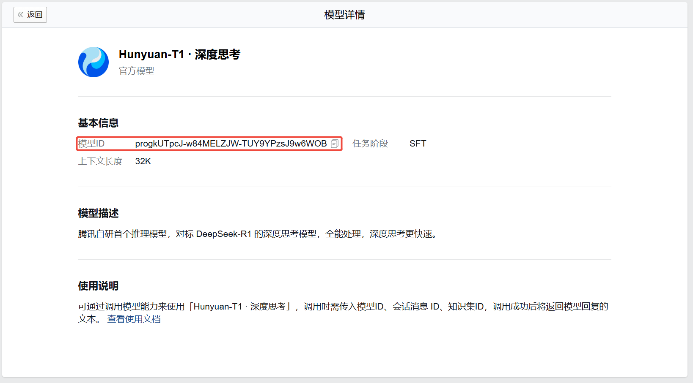
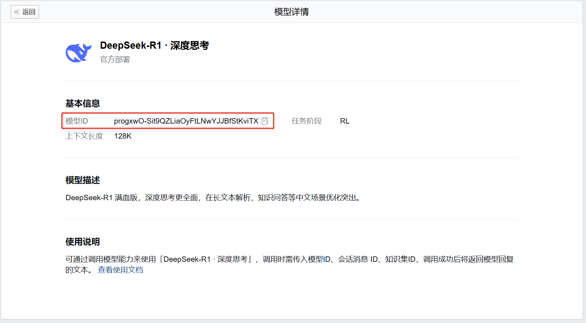
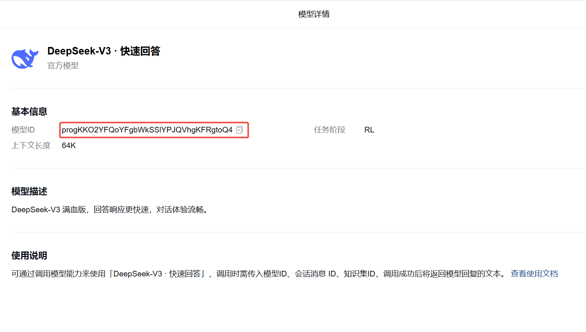
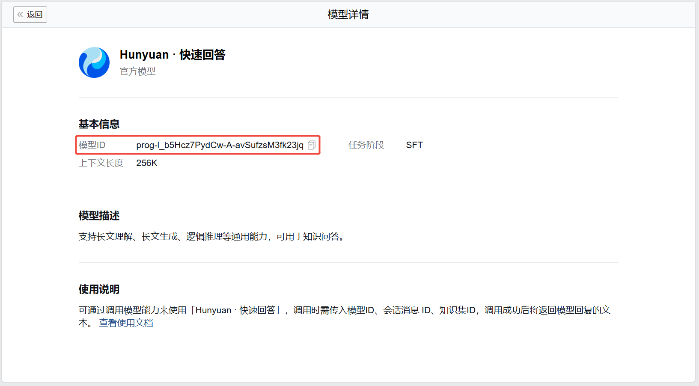

目录
应用在专区中的程序可调用本接口传入会话内容，使用企业微信通用的大语言模型进行会话分析，目前通用的大模型有 Hunyuan-T1 · 深度思考（灰度中）、 DeepSeek-R1 · 深度思考（灰度中） 、DeepSeek-V3 · 快速回答与 Hunyuan · 快速回答 四种选项。
详细说明
该接口仅支持分析文本消息
目前该接口只支持自建应用进行调用
模型的输入协议由管理端的配置决定，除自定义文本外，还可以使用以下3项数据：
A(员工)说：今天天气真不错！ B(客户)说：确实呀！点击复制
今天天气真不错！ 确实呀！点击复制
文档1：文本片段1 文档2：文本片段2点击复制
文档1：问题：问题1, 回答：答案1 文档2：问题：问题2, 回答：答案2点击复制
| 应用类型 | 权限要求 |
|---|---|
| 自建应用 | 需具备「数据与智能专区权限」 |
| 代开发应用 | 暂不支持 |
| 第三方应用 | 暂不支持 |
请求方法
通过SDK调用，具体方式参考专区程序使用指引。
请求接口名：
create_ww_model_task
请求包体：
{ "kb_id": "KBID", "msg_list":[{ "msgid": "MSGID1", "encrypt_info":{ "secret_key": "SECRETKEY1" } },{ "msgid": "MSGID2", "encrypt_info":{ "secret_key": "SECRETKEY2" } }], "model_id": "MODELID", "need_think_result": false }点击复制
参数说明：
| 参数 | 是否必须 | 说明 |
|---|---|---|
| kb_id | 否 | 知识集id |
| msg_list | 是 | 消息列表，最多1000个 |
| msg_list.msgid | 是 | 每条消息对应的msgid。多次出现同一个msgid，以首次出现的为准。目前支持文本、语音、音频存档消息 |
| msg_list.encrypt_info.secret_key | 是 | 该消息的密钥，将encrypted_secret_key用RSA私钥解密后得到 |
| model_id | 否 | 调用的模型id，用于区分调用的是 Hunyuan-T1 · 深度思考（灰度中）、DeepSeek-R1 · 深度思考（灰度中）、DeepSeek-V3 · 快速回答 还是 Hunyuan · 快速回答 模型，在管理端获取。 只能传入 Hunyuan-T1 · 深度思考（灰度中）、DeepSeek-R1 · 深度思考（灰度中）、DeepSeek-V3 · 快速回答 或者 Hunyuan · 快速回答 模型的模型id，否则会报错。 不填默认为 Hunyuan · 快速回答 模型 |
| need_think_result | 否 | 是否返回模型的思考过程部分 默认为否 选择不返回思考过程部分时，模型仍将进行深度思考，只是最终输出结果不包含思考过程 |
model_id字段获取示例（Hunyuan-T1 · 深度思考 和 DeepSeek-R1 · 深度思考 灰度中）：

返回结果：
{ "errcode": 0, "errmsg": "ok", "jobid": "JOBID", "fail_list":[ { "errcode": 710601, "errmsg": "xxx", "msgid": "MSGID2", "encrypt_info":{ "secret_key": "SECRETKEY2" } } ] }点击复制
参数说明：
| 参数 | 说明 |
|---|---|
| errcode | 错误码 |
| errmsg | 错误码说明 |
| jobid | 任务id。首次提交时返回 |
| fail_tag_group_id_list | 非法的客户标签组id列表 |
| fail_list | 提交出错的消息列表，只有msgid重复项返回至该列表，详见FailMsg说明 |
FailMsg说明：
| 参数 | 说明 |
|---|---|
| errcode | 错误码 |
| errmsg | 错误码说明 |
| msgid | 每条消息对应的msgid，与入参对应 |
| encrypt_info | 每条消息对应的加密信息，与入参对应 |
| encrypt_info.secret_key | 加密消息用的secret_key |
请求方法
通过SDK调用，具体方式参考专区程序使用指引。
请求接口名：
get_ww_model_result
请求包体：
{ "jobid": "JOBID" }点击复制
参数说明：
| 参数 | 是否必须 | 说明 |
|---|---|---|
| jobid | 是 | 任务id |
返回结果：
{ "errcode": 0, "errmsg": "ok", "status": 1, "fail_list":[{ "errcode": 710601, "errmsg": "xxx", "msgid": "MSGID" }], "response_data": "RESULT" }点击复制
参数说明：
| 参数 | 说明 |
|---|---|
| errcode | 错误码 |
| errmsg | 错误码说明 |
| status | 任务执行状态 0: 执行未完成 1: 执行完成 2: 执行失败 |
| fail_list | 错误的消息列表，如msgid不存在、非文本等，详见“创建企微通用模型任务”的FailMsg说明 |
| response_data | 企微通用模型的返回结果 当"need_think_result"字段输入为true，且使用 Hunyuan-T1 · 深度思考 或 DeepSeek-R1 · 深度思考 模型时，返回的结果开头将是模型的思考过程，以<think>开头，</think>结尾 |